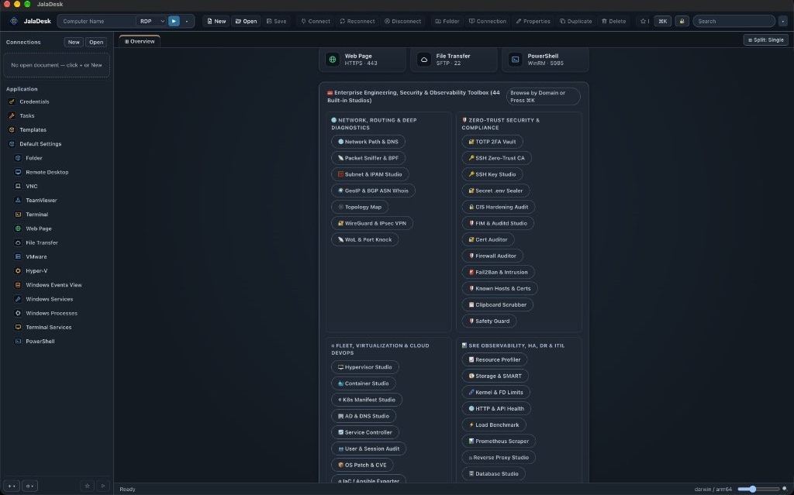
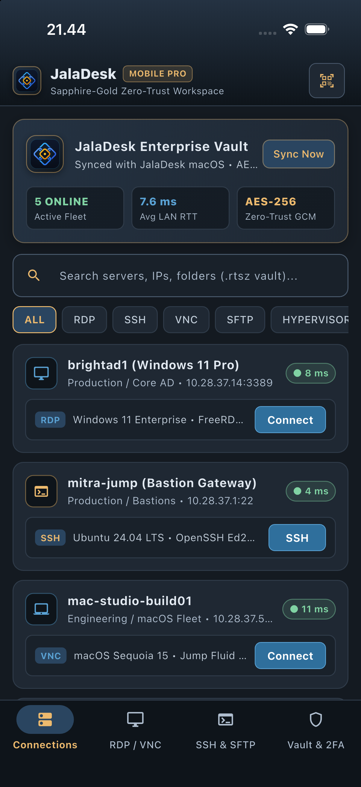

Zero-trust remote desktop, SSH & vault infrastructure for every screen.
Built for system administrators, SREs, and security-conscious operators. JalaDesk unifies native RDP and VNC desktop sessions, multi-hop SSH bastions, dual-pane SFTP file transfer, an offline two-factor authenticator, and optional client-side encrypted Cloud Sync inside one local-first workspace.
- macOS
- Windows
- Android
- iOS & iPadOS
Privacy Policy Terms of Service com.jaladesk.app



Precision touch control engineered for on-call mobility
Administer full graphical Windows and Linux desktops alongside multi-hop SSH bastions from Android phones, iPhones, and tablets without desktop-only compromises.
- Dual Trackpad & Direct Touch: Switch seamlessly between relative virtual cursor telemetry and pinch-to-zoom canvas control.
- Workstation Modifier Strip: Tactile key bar for sticky Ctrl, Alt, Win/Cmd, Esc, and F1–F12 chords.
- Synchronized Topologies: Shared folder inheritance, jump-host chains, and TLS SHA-256 certificate pins across desktop and mobile.

Hardware-backed vault & offline two-factor enclave
Every host inventory, SSH private key, password, and MFA seed is sealed locally on your device before touching disk or optional cloud storage.
- Authenticated Envelope Cipher: Vault containers (.jvault, .rwdoc, .jaladesk) use AES-256-GCM with PBKDF2-HMAC-SHA256 (100k) and scrypt.
- Offline RFC 6238 Authenticator: Live 30s and 60s TOTP generation (SHA-1, SHA-256, SHA-512) with one-tap session auto-type.
- Biometrics & 30s Scrubber: Unlock via Keychain, DPAPI, Android BiometricPrompt, or Apple Face ID with auto-expiring clipboard secrets.
-
FreeRDP 3 + Proportional VNC
NLA / CredSSP auth, dynamic display resize channel, and explicit SHA-256 TLS pinning.
-
Multi-Hop SSH -J & -L
Bastion ProxyJump chaining, local/remote/SOCKS5 port forwarding, and multi-host broadcast.
-
Dual-Pane SFTP
Side-by-side local and remote filesystem queues, permission auditing, and encrypted streaming.
-
Offline RFC 6238 2FA
Air-gapped TOTP code generation (SHA-1/256/512) inside the encrypted vault enclave.
-
AES-256-GCM AppData Sync
Client-side sealed vault containers synced via isolated Google Drive appDataFolder.
Multi-protocol architecture engineered for production fleets
Instead of scattering plaintext connection files, standalone terminal windows, and separate authenticator apps across workstations, JalaDesk isolates session rendering, secret derivation, and native protocol bridges inside one deterministic system topology.

Core Architectural Guarantees
- Context-Isolated Process Boundaries
- Session frames, terminal streams, and master key material run across separated execution boundaries under Strict Content Security Policy enforcement.
- Hierarchical Policy Inheritance
- Organize hundreds of hosts into nested environment folders where credentials, bastion jump hosts, and TLS certificate pins inherit cleanly down the tree without duplicating secrets.
- Deterministic Field-Level Smart Merge
- Conflict-free inventory reconciliation preserves folder structures and per-host edits when updating vaults concurrently across macOS, Windows, Android, and iOS.
- Direct Point-to-Point Socket Execution
- Every remote desktop, SSH, and SFTP socket connects directly from your device to your target host. Developer Rizky Bachtiar Irwanto operates zero relay or telemetry servers.
Subsystem & Protocol Specification Matrix
| Subsystem | Protocols & Engines | Production Capabilities |
|---|---|---|
| Graphical Desktops | FreeRDP 3.x · RFB VNC | NLA / CredSSP auth, explicit TLS SHA-256 certificate pinning, dynamic display resize channel, proportional scaling, and opt-in clipboard controls. |
| Bastion & File Transfer | SSHv2 · SFTP · ProxyJump | Multi-hop -J jump chains, local/remote/SOCKS5 -L/-R/-D port tunnels, multi-host broadcast shell, and dual-pane SFTP transfers. |
| Vault & Two-Factor | AES-256-GCM · RFC 6238 | Local scrypt and PBKDF2-HMAC-SHA256 derivation, offline TOTP codes, App Lock PIN, OS biometric enclave unlock, and 30s clipboard purge. |
| Mobile Touch Studio | Android · iOS · iPadOS | Virtual trackpad & direct canvas modes, sticky modifier key bar, SSH agent authentication, and encrypted parity with desktop .jvault containers. |
46 Built-In SRE & Security Studios
Diagnose routing anomalies, inspect certificates, and harden production servers directly inside the workspace without switching to external CLI wrappers.
- Network & BGP Telemetry: MTR path tracing, authoritative DNS propagation, subnet IPAM calculator, and packet header analysis.
- PKI & Zero-Trust Auth: X.509 TLS chain auditor, SSH Certificate Authority signer, Ed25519 key generator, and .env secret sealer.
- Compliance & Observability: CIS hardening checklists, Prometheus scrape inspector, systemd unit analyzer, and HTTP endpoint probes.
Zero-knowledge Cloud Sync & Google Drive AppData transparency
JalaDesk requires no account and operates completely offline by default. When you opt in to Google Drive Cloud Sync, your vault is encrypted locally on your device prior to upload and stored solely inside your own Google Account's isolated Application Data container.
-
On-Device MemoryProcess-Isolated Plaintext
Host inventories, SSH private keys, passwords, and TOTP seeds exist unencrypted strictly inside local process memory.
-
Local Key DerivationPBKDF2-HMAC-SHA256 (100k)
A 256-bit key is derived locally from your Vault Master Passphrase and unique cryptographic salt. Your passphrase never leaves your device.
-
Authenticated SealAES-256-GCM Ciphertext
Vault payload is sealed into jaladesk-vault-v1.jvault with a random IV and 128-bit integrity tag preventing tampering.
-
Isolated Cloud ContainerGoogle Drive appDataFolder
Uploaded directly over HTTPS via OAuth 2.0 PKCE into your hidden appDataFolder with zero access to personal Drive files.
OAuth 2.0 Scope Governance Table
When you initiate optional Google Sign-In, JalaDesk authenticates directly with official Google endpoints via OAuth 2.0 PKCE and requests strictly minimal scopes:
| Requested OAuth 2.0 Scope | Exact On-Device Purpose & Boundary |
|---|---|
https://www.googleapis.com/auth/drive.appdata |
Reads, writes, and deletes only JalaDesk's client-side AES-256-GCM encrypted vault container inside your private Google Drive appDataFolder. Cannot view, list, or access personal Drive files, folders, documents, or photos. |
openid |
Completes standard OpenID Connect OAuth 2.0 PKCE authentication directly between your device and official Google endpoints (oauth2.googleapis.com). |
userinfo.email |
Displays your connected Google account email locally inside JalaDesk's Cloud Sync status bar so you can verify which account is bound. Never sent to any developer server. |
userinfo.profile |
Displays your basic Google account display name locally inside JalaDesk's Cloud Sync settings view. Never transmitted to third parties. |
Supported Sync Providers Matrix
Every sync adapter transmits identical client-side AES-256-GCM sealed ciphertext directly to storage infrastructure you control:
| Provider | Transport & Auth | Isolation Scope |
|---|---|---|
| Google Drive AppData | HTTPS · OAuth 2.0 PKCE | Hidden appDataFolder; revocable anytime at myaccount.google.com/permissions. |
| Private SFTP | SSHv2 · Ed25519 / Key | Self-hosted Linux/BSD directory under your own SSH daemon and firewall rules. |
| WebDAV | HTTPS · Basic / Bearer | Compatible with Nextcloud, ownCloud, and private enterprise WebDAV shares. |
| GitHub Secret Gist | HTTPS · Fine-Grained PAT | Versioned private Gist holding encrypted .jvault ciphertext envelopes. |
Google API Services User Data Policy (Limited Use)
JalaDesk's use and transfer to any other app of information received from Google APIs will adhere to the Google API Services User Data Policy, including the Limited Use requirements. Review full disclosures in our Privacy Policy and Terms of Service.